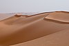

sand
matter

Source: Wikipedia
Wikipedia Page (Something wrong with this association? Let us know.)
Wikidata Page (Something wrong with this association? Let us know.)
Occurs in:
- river-delta_bottomset-beds_sediment_sand__volume_fraction
- river-delta_foreset-beds_sediment_sand__volume_fraction
- river-delta_topset-beds_sediment_sand__volume_fraction
- river-delta_channel~main_entrance_water_sediment_sand__volume_fraction
- river-delta_channel~main_entrance_water_sediment_sand_grain__mean_of_diameter
- sea_bottom_sediment_sand__volume_fraction
- soil_sand__mass_fraction
- soil~oven-dried_sand__mass_fraction
- soil_sand__volume_fraction
- water_sand_grain_settling__terminal_speed